¿Que Son?
Es la interconexión de 2 o más dispositivos. En una red se interconectan 2 dispositivos mínimo, los mismos pueden o ser similares, como por ejemplo 2 pc entre sí, o bien pueden ser distintos como una pc con un teléfono celular. Siempre la intención de esta interconexión es el compartir datos, pero no por eso es que siempre la interconexión entre los dispositivos es la misma o de similar manera. Podemos encontrar que para interconectarse los 2 dispositivos necesitan de un programa o app, y es necesario de el tener e mismo en ambos sistemas funcionando para que se puedan ver o conectarse entre si. También encontramos que estas redes conforman distintas topologías para poder funcionar de la forma más óptima, de acuerdo al espacio geográfico y la distribución necesaria para su funcionamiento; así como también es que estas topologías pueden depender de la cantidad de dispositivos que se conecten en nuestra red.

Topologias
Los tipos de topologías de redes son:
Peer to Peer
La topología más simple es un enlace permanente entre dos puntos finales (también conocida como point-to-point, o abreviadamente, P2P). La topología punto a punto conmutado es el modelo básico de la telefonía convencional. El valor de una red permanente de punto a punto la comunicación sin obstáculos entre los dos puntos finales. El valor de una conexión punto-a-punto a demanda es proporcional al número de pares posibles de abonados y se ha expresado como la ley de Metcalfe.
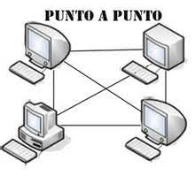
Topología en Bus
Topología de bus En la topología de bus todos los nodos (computadoras) están conectados a un circuito común (bus). La información que se envía de una computadora a otra viaja directamente o indirectamente, si existe un controlador que enruta los datos al destino correcto. La información viaja por el cable en ambos sentidos a una velocidad aproximada de 10/100 Mbps y tiene en sus dos extremos una resistencia (terminador). Se pueden conectar una gran cantidad de computadoras al bus, si un computador falla, la comunicación se mantiene, no sucede lo mismo si el bus es el que falla. El tipo de cableado que se usa puede ser coaxial, par trenzado o fibra óptica. En una topología de bus, cada computadora está conectada a un segmento común de cable de red. El segmento de red se coloca como un bus lineal, es decir un cable largo que va de un extremo a otro de la red, y al cual se conecta cada nodo de ésta. El cable puede ir por el piso, las paredes, el techo o por varios lugares, siempre y cuando sea un segmento continuo.
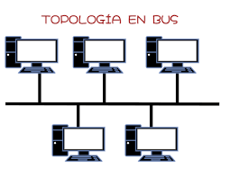
La topología en estrella
Reduce la posibilidad de fallo de red conectando todos los nodos a un nodo central. Cuando se aplica a una red basada en la topología estrella este concentrador central reenvía todas las transmisiones recibidas de cualquier nodo periférico a todos los nodos periféricos de la red, algunas veces incluso al nodo que lo envió. Todos los nodos periféricos se pueden comunicar con los demás transmitiendo o recibiendo del nodo central solamente. Un fallo en la línea de conexión de cualquier nodo con el nodo central provocaría el aislamiento de ese nodo respecto a los demás, pero el resto de sistemas permanecería intacto. El tipo de concentrador hub se utiliza en esta topología, aunque ya es muy obsoleto; se suele usar comúnmente un switch. La desventaja radica en la carga que recae sobre el nodo central. La cantidad de tráfico que deberá soportar es grande y aumentará conforme vayamos agregando más nodos periféricos, lo que la hace poco recomendable para redes de gran tamaño. Además, un fallo en el nodo central puede dejar inoperante a toda la red. Esto último conlleva también una mayor vulnerabilidad de la red, en su conjunto, ante ataques.

Topología en Anillo
Si el nodo central es pasivo, el nodo origen debe ser capaz de tolerar un eco de su transmisión. Una red, en estrella activa, tiene un nodo central activo que normalmente tiene los medios para prevenir problemas relacionados con el eco. Una red en anillo es una topología de red en la que cada estación tiene una única conexión de entrada y otra de salida. Cada estación tiene un receptor y un transmisor que hace la función de traductor, pasando la señal a la siguiente estación. En este tipo de red la comunicación se da por el paso de un token o testigo, que se puede conceptualizar como un cartero que pasa recogiendo y entregando paquetes de información, de esta manera se evitan eventuales pérdidas de información debidas a colisiones. En un anillo doble (Token Ring), dos anillos permiten que los datos se envíen en ambas direcciones (Token passing). Esta configuración crea redundancia (tolerancia a fallos). Evita las colisiones.
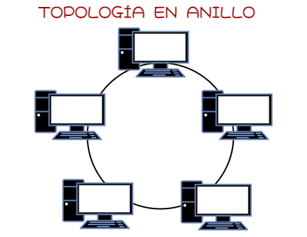
Topología en árbol
(También conocida como topología jerárquica) puede ser vista como una colección de redes en estrella ordenadas en una jerarquía. Éste árbol tiene nodos periféricos individuales (por ejemplo hojas) que requieren transmitir a y recibir de otro nodo solamente y no necesitan actuar como repetidores o regeneradores. Al contrario que en las redes en estrella, la función del nodo central se puede distribuir. Como en las redes en estrella convencionales, los nodos individuales pueden quedar aislados de la red por un fallo puntual en la ruta de conexión del nodo. Si falla un enlace que conecta con un nodo hoja, ese nodo hoja queda aislado; si falla un enlace con un nodo que no sea hoja, la sección entera queda aislada del resto. Para aliviar la cantidad de tráfico de red que se necesita para retransmitir en su totalidad, a todos los nodos, se desarrollaron nodos centrales más avanzados que permiten mantener un listado de las identidades de los diferentes sistemas conectados a la red. Éstos switches de red “aprenderían” cómo es la estructura de la red transmitiendo paquetes de datos a todos los nodos y luego observando de dónde vienen los paquetes de respuesta también es utilizada como un enchufe u artefacto.

Topología en Malla
La topología de red mallada es una topología de red en la que cada nodo está conectado a todos los nodos. De esta manera es posible llevar los mensajes de un nodo a otro por distintos caminos. Si la red de malla está completamente conectada, no puede existir absolutamente ninguna interrupción en las comunicaciones. Cada servidor tiene sus propias conexiones con todos los demás servidores. Las redes de malla son auto ruteables. La red puede funcionar, incluso cuando un nodo desaparece o la conexión falla, ya que el resto de los nodos evitan el paso por ese punto. En consecuencia, la red malla, se transforma en una red muy confiable.

Topología Hibrida o Mixta
Topología híbrida, las redes pueden utilizar diversas tipologías para conectarse, como por ejemplo en estrella. La topología híbrida es una de las más frecuentes y se deriva de la unión de varios tipos de topologías de red, de aquí el nombre de híbridas. Ejemplos de topologías híbridas serían: en árbol, estrella-estrella, bus-estrella, etc. Su implementación se debe a la complejidad de la solución de red, o bien al aumento en el número de dispositivos, lo que hace necesario establecer una topología de este tipo. Las topologías híbridas tienen un costo muy elevado debido a su administración y mantenimiento, ya que cuentan con segmentos de diferentes tipos, lo que obliga a invertir en equipo adicional para lograr la conectividad deseada.
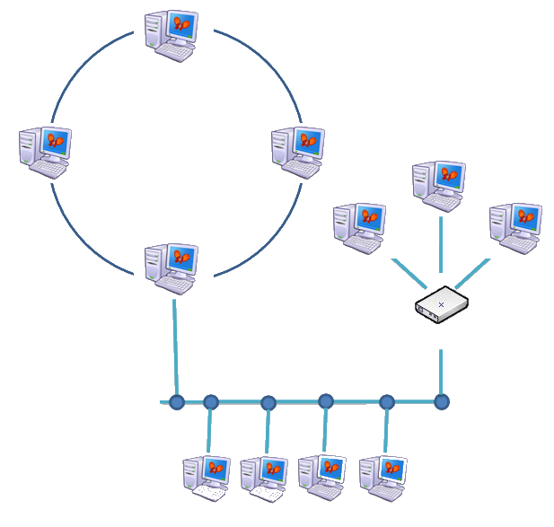
Tipos
Las redes tambien se dividen en distintos tipos de acuerdo a su alcance y esto nos da las siguientes redes:
Personal Area Network (PAN)
Personal Area Network (PAN), en español Red de Área Personal es un estándar de red para la comunicación entre distintos dispositivos (computadoras, puntos de acceso a internet, teléfonos celulares, PDA, dispositivos de audio, impresoras) cercanos al punto de acceso. Estas redes son de unos pocos metros y para uso personal. Cuando se desarrolla con redes inalámbricas, se denomina Wireless Personal Area Network (WPAN).
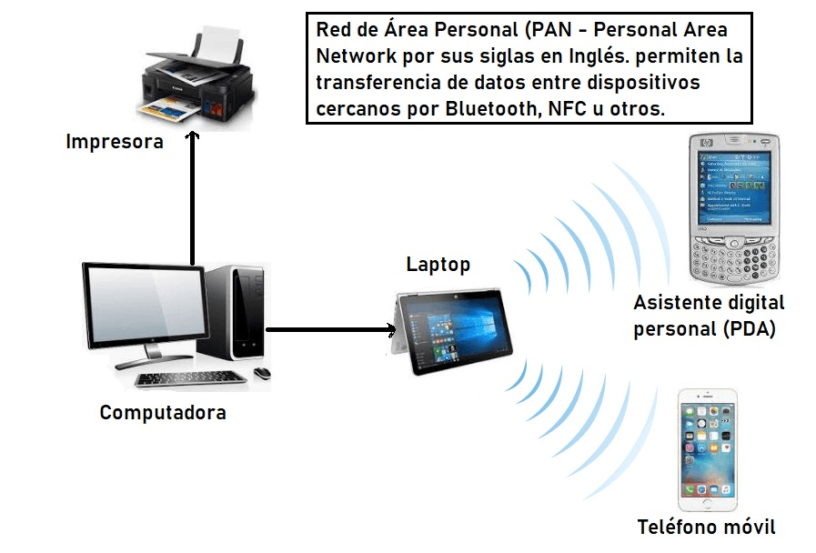
Local Area Network (LAN)
Una red de área local o LAN es una red de computadoras que permite la comunicación y el intercambio de datos entre diferentes dispositivos a nivel local, ya que está limitada a distancias cortas. Por esta razón, esta red se utiliza para hogares privados, tales como una casa o un apartamento, y en empresas.
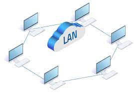
Metropolitan Area Network (MAN)
Una red de área metropolitana (MAN) es una red informática que conecta los ordenadores de un área metropolitana, que puede ser una gran ciudad, varias ciudades y pueblos, o cualquier zona grande con varios edificios. Una MAN es mayor que una red de área local (LAN), pero menor que una red de área amplia (WAN).
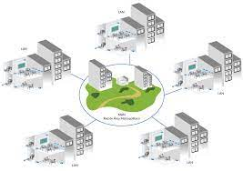
Wide Area Network (WAN)
Una red de área amplia, o WAN, es una red de computadoras que une e interconecta varias redes de ámbito geográfico mayor, por ejemplo redes de área local, aunque sus miembros no estén todos en una misma ubicación física.
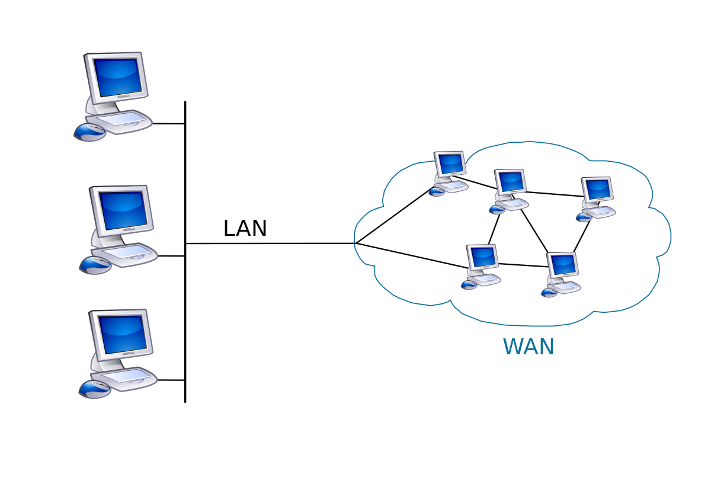
Global Area Network (GAN)
Una red global como Internet recibe el nombre de Global Área Network (GAN), sin embargo, no es la única red de ordenadores de esta índole. Las empresas que también son activas a nivel internacional mantienen redes aisladas que comprenden varias redes WAN y que logran, así, la comunicación entre los ordenadores de las empresas a nivel mundial. Las redes GAN utilizan la infraestructura de fibra de vidrio de las redes de área amplia (Wide Área Networks) y las agrupan mediante cables submarinos internacionales o transmisión por satélite.
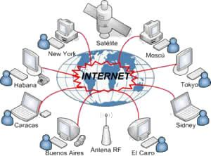
Virtual Private Network (VPN)
Una red privada virtual es una tecnología de red de ordenadores que permite una extensión segura de la red de área local sobre una red pública o no controlada como Internet.
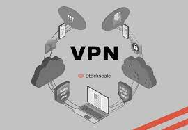
Virtual Local Area Network
Las VLAN (Virtual LAN), o también conocidas como redes de área local virtuales, es una tecnología de redes que nos permite crear redes lógicas independientes dentro de la misma red física. El objetivo de usar VLAN en un entorno doméstico o profesional, es para segmentar adecuadamente la red y usar cada subred de una forma diferente, además, al segmentar por subredes usando VLANs se puede permitir o denegar el tráfico entre las diferentes VLAN gracias a un dispositivo L3 como un router o un switch multicapa L3.
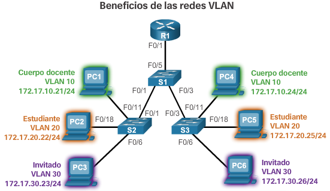